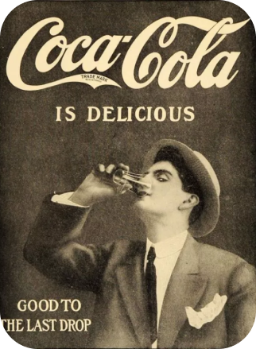
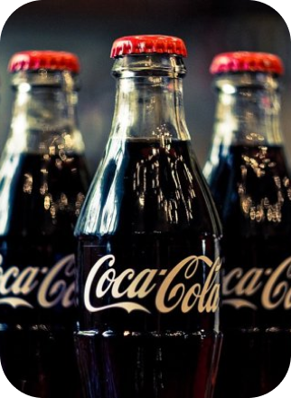

|
|
|
|
|
|
|
136 +
ЛЕТ ОБНОВЛЯЕМ МИР
8 мая 1886 года
доктор Джон Пембертон
принес свой усовершенствованный
сироп в аптеку Джейкобса в центре
Атланты, где был налит первый стакан
Coca Cola.
Из этого культового напитка мы
превратились в компанию по
производству напитков общего
назначения.
Более 2,2 миллиарда порций наших
напитков ежедневно потребляются
более чем в 200 странах и территориях.
|
 |
|
|
|

|
Мы постоянно
совершенствуем наше
портфолио,
начиная с сокращения
содержания сахара в наших
напитках и заканчивая
выводом на рынок новых
инновационных продуктов.
|
Наша цель - обновить мир и изменить ситуацию к
лучшему.
Мы стремимся предлагать людям больше напитков,
которые они хотят, в различных категориях и
размерах, внедряя при этом устойчивые решения,
которые повышают устойчивость нашего бизнеса и
способствуют позитивным изменениям на планете. |
|
|
|